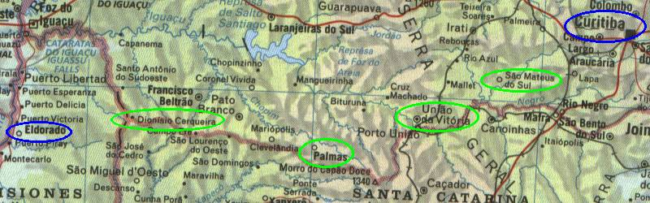

← anterior |
principal |
próxima →

- Curitiba
- São Mateus do Sul
- União da Vitória
- Palmas
- Dionísio Cerqueira
- Eldorado (argentina)
Dicas
- Cata-ventos modernos (Usina Eólica de Palmas)
- Fronteira com a Argentina em Dionísio Cerqueira burocracia, ganha um papelzinho que tem que ser apresentado quando for sair da argentina. Não perca!
- Posto policial pequeno logo após a fronteira. Eles VÃO te parar.
- Até Eldorado caminho muito bonito, verde
← anterior |
principal |
próxima →